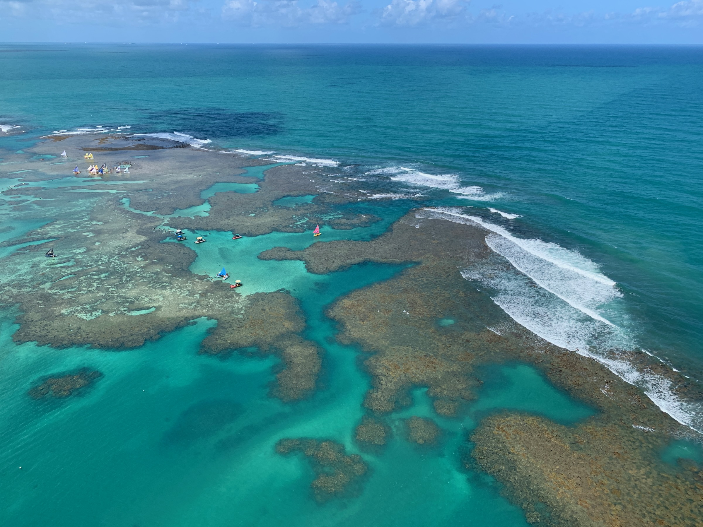

Praia de copacabana
Vista aerea da praia de Copacabana

Vista da orla de Copacabana
Vista à noite da cidade de Copacabana
Vista área praia de Copacabana
Praia de Porto de Galinhas, Pernambuco
praia de porto de Galinhas, Pernambuco

Porto de Galinhas é conhecida por suas águas cristalinas e piscinas naturais...
Praia de Jericoacoara, Ceará

Jericoacoara é uma vila de pescadores que se tornou um destino turístico...
Praia do Forte, Bahia

A Praia do Forte é conhecida por suas praias paradisíacas e a preservação de tartarugas marinhas...
Praia do Espelho, Bahia
A Praia do Espelho é famosa por suas falésias coloridas e águas cristalinas...

Cuidados no Verão
Para aproveitar o verão nas praias, é importante tomar alguns cuidados, como usar protetor solar, manter-se hidratado...
- Fique longe do limão
- Abuse do protetor solar (e de roupas com fotoproteção)
- Tenha cuidado com a alimentação
- Evite nadar logo após comer
- Não fique muito tempo com roupa de banho molhada
- Não esqueça de proteger os olhos
- Cuidado com a bebida alcoólica em excesso
- Não esqueça de beber água
Dicas para não perder crianças na praia
Em praias movimentadas, é essencial ficar atento às crianças. Algumas dicas incluem estabelecer um ponto de encontro, identificar as crianças com pulseiras...
Outras dicas
- 1. Mantenha um ponto de encontro definido.
- 2. Use pulseiras de identificação nas crianças.
- 3. Ensine às crianças seus nomes completos e números de telefone.
- 4. Esteja atento à localização das salva-vidas.
- 5. Evite praias muito movimentadas.
- 6. Incentive as crianças a não se afastarem muito.
- 7. Use uma barraca ou guarda-sol colorido como ponto de referência.
- 8. Esteja ciente dos arredores e identifique pontos de referência fixos.